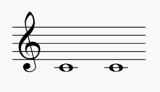
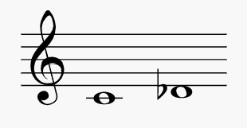
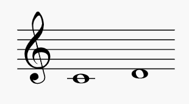

音程与歌曲
用耳朵听出音程最普遍的方式，就是利用可联想到的歌曲来记音程，本人可以称之为音程歌曲联想法；例如下行的小三度可以联想到 Hey Jude
这首歌的开头。以下列出耳熟能详的歌曲表，帮助您联想和记忆音程，当然您也可以自己为每个音程找出一首好记的歌曲。记得，有些音程之所以比较容易听出，是因为这些音的特色很强烈
上行音程
-
一度
天佑女王（John Bull，1745）
铃儿响叮当（James Lord Pierpont，1857）
祝你生日快乐（Mildred Hill，1893）
顺其自然（披头士，1970）
风中之烛 （Elton John，1973）

-
小二度
随着时间的流逝（Herman Hupfeld，1931）
白色圣诞节（Irving Berlin，1954）
一夜狂欢（披头四，1964）
《大白鲨》电影主题曲（John Williams，1975）
她很可爱吧（Stevie Wonder，1976）

-
大二度
雅克兄弟（传统歌谣）
平安夜（Franz Xaver Gruber，1818）
红鼻子驯鹿鲁道夫（J. Marks，1939）
秋叶（Joseph Kosma，1945）
永不放弃你（Rick Astley，1987）
